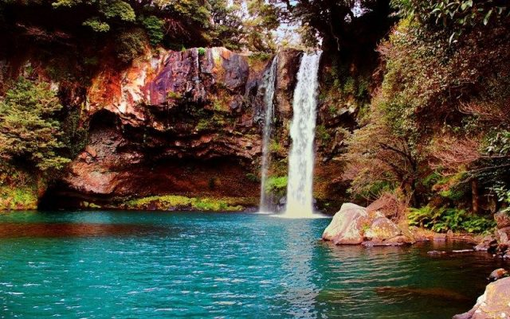
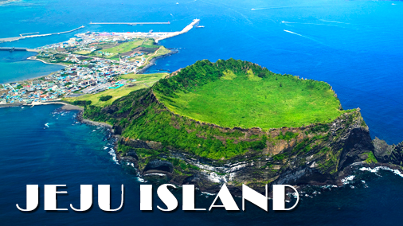

South Korea’s has 9 provinces, Jeju being one of them is the only province that is self-governed. The island sheltering more than 600,000 people experience more than 15,000,000 of visitors every year.Jeju Island is the Island between Korea Straits and south of South Jeolla Province, South Korea. With a moderate climate throughout the year, the place is also known as “South Korea’s Hawaii.”
Jeju Island. A favorite with newlyweds (and K-drama fans), this popular retreat is also home to miles of golden beaches, winding coastal trails, and Jeju Waterworld, the area’s largest water park. No matter what your fancy, one thing is for certain: a day of sightseeing isn’t complete without enjoying some of the isle’s delicious raw seafood and famed barbecued black pork.



 Seoul Tower
Seoul Tower Bukchon Hanok Village
Bukchon Hanok Village Seoraksan National Park
Seoraksan National Park Gyeongbokgung Palace
Gyeongbokgung Palace